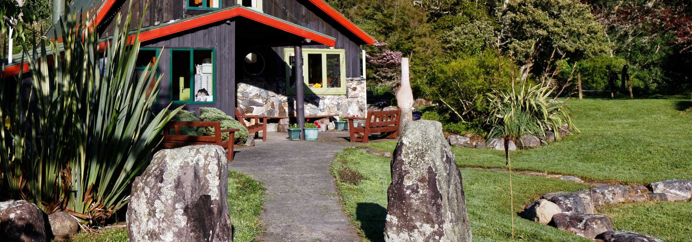
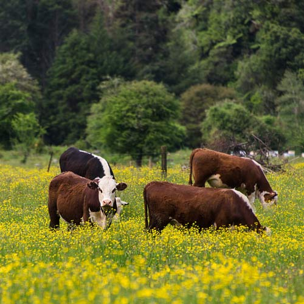
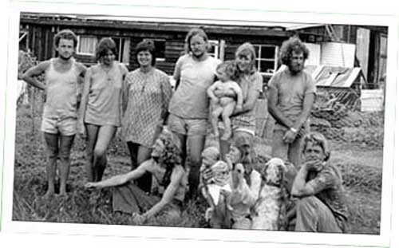

Care for the land.
Gardens, orchards, farm, and native forest are all part of the place we share.
Growing together since 1974
Rainbow Valley is an intentional community, built around shared land, cooperation, non-violence, and a willingness to work together.

Life at Rainbow
Our residents come from different generations and backgrounds. We look after our own homes and livelihoods while sharing responsibility for this place. The Community House brings us together for celebrations, meetings, and meals, and welcomes guests in summer.
There’s no single religious, spiritual, or political belief that defines Rainbow. What connects us is a willingness to cooperate, and a love for the natural environment we call home.
Gardens, orchards, farm, and native forest are all part of the place we share.
Individual homes and interests, with shared spaces and responsibilities.
Community events, shared meals, and the everyday work of living cooperatively.

The farm & gardens
The farm supports the whole community. Income from farming goes back into caring for and improving the farmland.
We aim to work with organic principles, remain open to new ideas, and put animal welfare high on the list. Alongside the communal cattle herd, residents keep animals of their own.
Vegetable gardens, fruit and nut trees, timber, and firewood plantings are part of life here too.

A story still being written
The valley saw a gold rush in the 1850s, then farming and timber milling from the 1940s. Our Community House stands on the old sawmill site.
Rainbow Valley Community began during the back-to-the-land movement. An old hay barn became accommodation; gardens and hand-built homes followed.
For the first ten years, life here ran without mains electricity. People shared skills, tools, and the work of turning rough pasture into a home.
Today, established gardens, a working farm, and regenerating native forest tell the story of many hands and many years of care.
Bring your own story
A visit is a chance to learn how Rainbow works. Please arrange it with us first: space, the season, and what’s happening in the community all shape what’s possible.
Interested in volunteering? Tell us about your practical skills, experience on the land, and any previous community involvement. Work may include gardening, pruning, firewood, track maintenance, or other community jobs. Bring sturdy footwear and clothes that can get muddy.
Start a conversationYour own little corner of Golden Bay
Come for a few nights. Leave with a little more space to breathe.